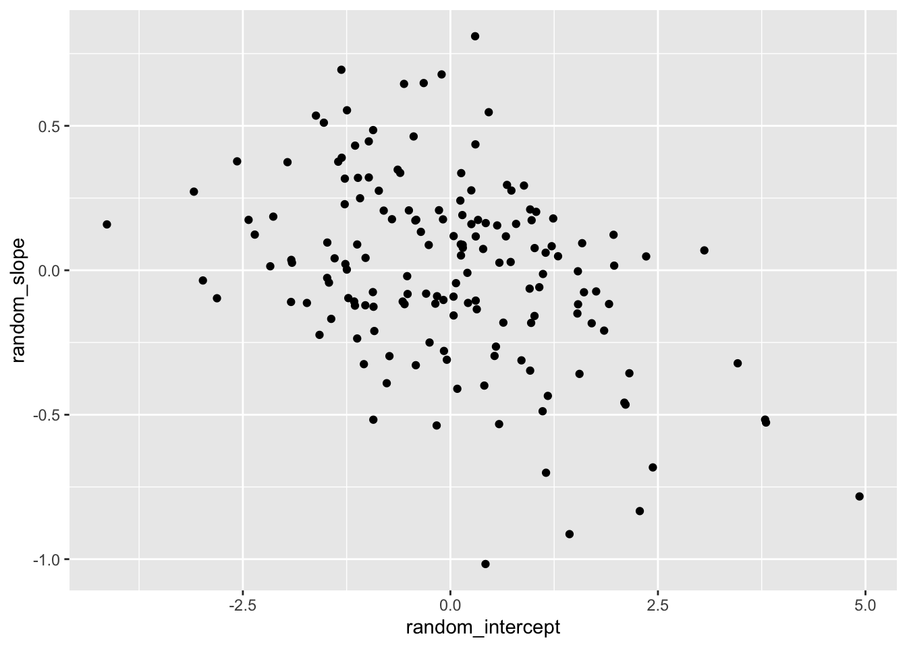
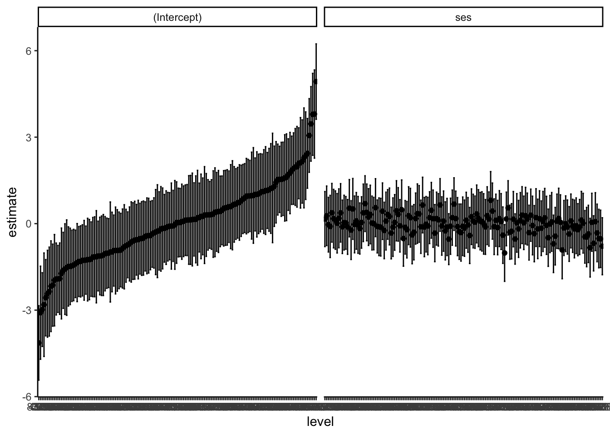
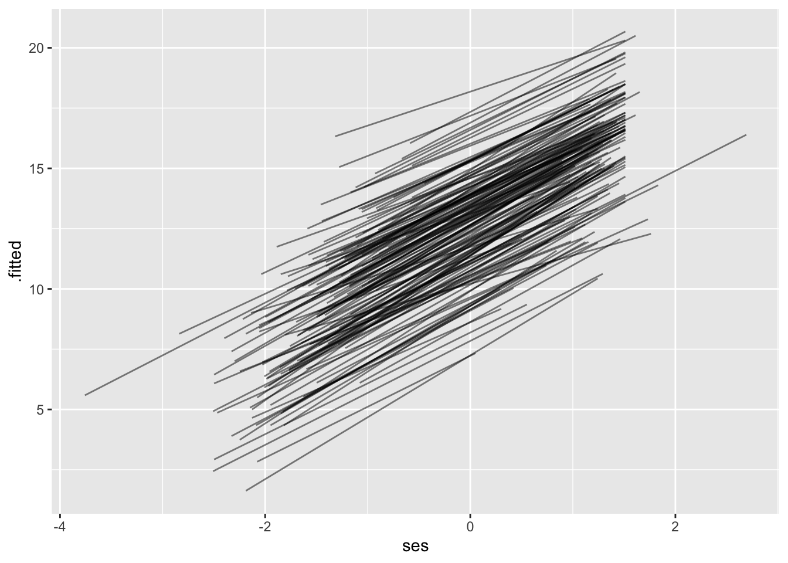
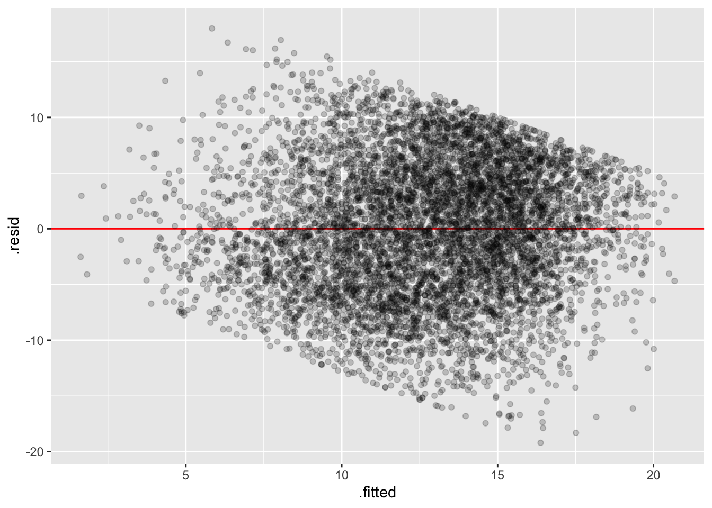

# load libraries
library(tidyverse)
library(broom.mixed)
library(haven)
library(knitr)
library(lme4)
# clear memory
rm(list = ls())
# load HSB data
hsb <- read_dta("data/hsb.dta")19 Extracting information from fitted lmer models with broom
There are three general ways to get information out of a fit model: (1) print it to the screen and read it, (2) use a variety of base R methods to pull information out of the model, and (2) use the broom package to pull information out of the model into different kinds of data frames (which is in line with tidy programming, and the tidyverse).
This chapter looks at the third way. The following chapter looks at the “base R” way. Which to use is a matter of preference.
19.1 Simple Demonstration
One of my favorite R packages is broom, which has many awesome convenience functions for regression models, including MLMs. broom.mixed is the extension that specifically works with lmer models. It does this via a few core methods that give you the model parameters and information as a nice data frame that you can then use more easily than the original result from your lmer() call. Let’s see how it works.
We first load it (and a few other things, and some data):
19.1.1 tidy
The tidy() method takes a model object and returns the output as a tidy tibble (i.e., a data frame), which makes it very easy to work with. Compare the results below:
ols <- lm(mathach ~ ses, hsb)
# ugly!
summary(ols)
Call:
lm(formula = mathach ~ ses, data = hsb)
Residuals:
Min 1Q Median 3Q Max
-19.4382 -4.7580 0.2334 5.0649 15.9007
Coefficients:
Estimate Std. Error t value Pr(>|t|)
(Intercept) 12.74740 0.07569 168.42 <2e-16 ***
ses 3.18387 0.09712 32.78 <2e-16 ***
---
Signif. codes: 0 '***' 0.001 '**' 0.01 '*' 0.05 '.' 0.1 ' ' 1
Residual standard error: 6.416 on 7183 degrees of freedom
Multiple R-squared: 0.1301, Adjusted R-squared: 0.13
F-statistic: 1075 on 1 and 7183 DF, p-value: < 2.2e-16# beautiful!
tidy(ols)# A tibble: 2 × 5
term estimate std.error statistic p.value
<chr> <dbl> <dbl> <dbl> <dbl>
1 (Intercept) 12.7 0.0757 168. 0
2 ses 3.18 0.0971 32.8 8.71e-220# even better
ols |> tidy() |> kable(digits = 2)| term | estimate | std.error | statistic | p.value |
|---|---|---|---|---|
| (Intercept) | 12.75 | 0.08 | 168.42 | 0 |
| ses | 3.18 | 0.10 | 32.78 | 0 |
# Also works great for MLMs
mlm <- lmer(mathach ~ ses + mnses + (ses|schoolid), hsb)
tidy(mlm)# A tibble: 7 × 6
effect group term estimate std.error statistic
<chr> <chr> <chr> <dbl> <dbl> <dbl>
1 fixed <NA> (Intercept) 12.7 0.151 84.2
2 fixed <NA> ses 2.19 0.122 18.0
3 fixed <NA> mnses 3.78 0.383 9.88
4 ran_pars schoolid sd__(Intercept) 1.64 NA NA
5 ran_pars schoolid cor__(Intercept).ses -0.212 NA NA
6 ran_pars schoolid sd__ses 0.673 NA NA
7 ran_pars Residual sd__Observation 6.07 NA NA 19.1.2 glance
What about model fit stats? That’s where glance comes in:
glance(ols)# A tibble: 1 × 12
r.squared adj.r.squared sigma statistic p.value df logLik AIC BIC
<dbl> <dbl> <dbl> <dbl> <dbl> <dbl> <dbl> <dbl> <dbl>
1 0.130 0.130 6.42 1075. 8.71e-220 1 -23549. 47104. 47125.
# ℹ 3 more variables: deviance <dbl>, df.residual <int>, nobs <int>glance(mlm) |>
kable(digits = 2)| nobs | sigma | logLik | AIC | BIC | REMLcrit | df.residual |
|---|---|---|---|---|---|---|
| 7185 | 6.07 | -23280.71 | 46575.42 | 46623.58 | 46561.42 | 7178 |
19.1.3 augment
What about your estimated random effects? augment to the rescue, giving estimates for each random effect:
mlm |>
ranef() |>
augment() |>
head() |>
kable(digits = 2)| grp | variable | level | estimate | std.error | lb | ub | |
|---|---|---|---|---|---|---|---|
| schoolid | (Intercept) | 8367 | -4.14 | -0.18 | 0.78 | -5.43 | -2.85 |
| schoolid | (Intercept) | 4523 | -3.09 | 0.02 | 0.98 | -4.70 | -1.47 |
| schoolid | (Intercept) | 6990 | -2.98 | -1.46 | 0.78 | -4.26 | -1.70 |
| schoolid | (Intercept) | 3705 | -2.81 | 0.28 | 1.09 | -4.61 | -1.02 |
| schoolid | (Intercept) | 8854 | -2.57 | -0.85 | 0.80 | -3.89 | -1.25 |
| schoolid | (Intercept) | 9397 | -2.43 | -0.65 | 0.92 | -3.94 | -0.92 |
The level column are your school IDs, here. If you have multiple sets of random effects, they will all be stacked, and indexed via grp.
19.2 Extracting lmer model info
19.2.1 Obtaining Fixed Effects
lmer models are in reduced form, so fixed effects include both L1 and L2 predictors. tidy denotes the type of effect in a column called effect, where fixed means fixed, and ran_pars means random (standing for “random parameters”)
mlm |>
tidy() |>
filter(effect == "fixed")# A tibble: 3 × 6
effect group term estimate std.error statistic
<chr> <chr> <chr> <dbl> <dbl> <dbl>
1 fixed <NA> (Intercept) 12.7 0.151 84.2
2 fixed <NA> ses 2.19 0.122 18.0
3 fixed <NA> mnses 3.78 0.383 9.88We can use the [[]] notation or a pipeline to extract elements from the data frame:
# within effect of SES
tidy(mlm)[[2,4]][1] 2.190349# contextual effect of SES
tidy(mlm)[[3,4]][1] 3.781243# using the variable names in a pipeline
mlm |>
tidy() |>
filter(term == "ses") |>
pull(estimate)[1] 2.19034919.2.2 Obtaining Random Effects
tidy includes the random effects (SDs and correlations) right there in the output. For example, sd__ses is the SD of the SES slope.
# display all random effects
mlm |>
tidy() |>
filter(effect == "ran_pars")# A tibble: 4 × 6
effect group term estimate std.error statistic
<chr> <chr> <chr> <dbl> <dbl> <dbl>
1 ran_pars schoolid sd__(Intercept) 1.64 NA NA
2 ran_pars schoolid cor__(Intercept).ses -0.212 NA NA
3 ran_pars schoolid sd__ses 0.673 NA NA
4 ran_pars Residual sd__Observation 6.07 NA NA# pull single number
mlm |>
tidy() |>
filter(term == "sd__ses") |>
pull(estimate)[1] 0.673081819.2.3 Obtaining Empirical Bayes Estimates of the Random Effects
This is best done in a pipeline. We first apply ranef, then augment and get the EB estimates in the estimate column, along with the std.error, confidence bounds, and qq statistics.
mlm |>
ranef() |>
augment() |>
head() grp variable level estimate qq std.error lb
1 schoolid (Intercept) 8367 -4.137656 -0.1811498 0.7845770 -5.428170
2 schoolid (Intercept) 4523 -3.089835 0.0235018 0.9819306 -4.704967
3 schoolid (Intercept) 6990 -2.981315 -1.4619679 0.7779876 -4.260991
4 schoolid (Intercept) 3705 -2.811935 0.2776904 1.0911916 -4.606785
5 schoolid (Intercept) 8854 -2.569302 -0.8528365 0.8045804 -3.892719
6 schoolid (Intercept) 9397 -2.431031 -0.6452734 0.9163587 -3.938307
ub
1 -2.8471413
2 -1.4747032
3 -1.7016394
4 -1.0170840
5 -1.2458846
6 -0.923755319.2.4 Intercept-Slope Correlation
The BLUPs are in long form. We can reshape to wide if we want to, for example, visualize the correlation between the random intercepts and slopes.
blups <- mlm |>
ranef() |>
augment() |>
dplyr::select(variable, level, estimate) |>
pivot_wider(names_from = variable, values_from = estimate,
id_cols = level) |>
dplyr::rename(schoolid = 1, random_intercept = 2, random_slope = 3)
head(blups)# A tibble: 6 × 3
schoolid random_intercept random_slope
<fct> <dbl> <dbl>
1 8367 -4.14 0.159
2 4523 -3.09 0.272
3 6990 -2.98 -0.0353
4 3705 -2.81 -0.0968
5 8854 -2.57 0.377
6 9397 -2.43 0.174 ggplot(blups, aes(x = random_intercept, y = random_slope)) +
geom_point()
19.2.5 Caterpillar Plots
The included information as a data frame makes it easy to construct caterpillar plots!
ri <- mlm |>
ranef() |>
augment()
ggplot(ri, aes(x = level, y = estimate,
ymin = lb,
ymax = ub)) +
facet_wrap( ~ variable, nrow = 1 ) +
geom_point() +
geom_errorbar() +
theme_classic()
19.2.6 Fitted Values
Using augment directly on the lmer object gives us fitted values (.fitted) and residuals (.resid). We can use this for residual plots or for plotting lines for each school.
mlm |>
augment() |>
head()# A tibble: 6 × 15
mathach ses mnses schoolid .fitted .resid .hat .cooksd .fixed .mu
<dbl> <dbl> <dbl> <dbl> <dbl> <dbl> <dbl> <dbl> <dbl> <dbl>
1 5.88 -1.53 -0.434 1224 7.29 -1.41 0.0325 0.000629 7.68 7.29
2 19.7 -0.588 -0.434 1224 9.43 10.3 0.0177 0.0175 9.74 9.43
3 20.3 -0.528 -0.434 1224 9.57 10.8 0.0173 0.0188 9.87 9.57
4 8.78 -0.668 -0.434 1224 9.25 -0.468 0.0183 0.0000376 9.57 9.25
5 17.9 -0.158 -0.434 1224 10.4 7.49 0.0164 0.00863 10.7 10.4
6 4.58 0.0220 -0.434 1224 10.8 -6.24 0.0170 0.00619 11.1 10.8
# ℹ 5 more variables: .offset <dbl>, .sqrtXwt <dbl>, .sqrtrwt <dbl>,
# .weights <dbl>, .wtres <dbl># fitted lines
mlm |>
augment() |>
ggplot(aes(x = ses, y = .fitted, group = schoolid)) +
geom_line( alpha=0.5 )
# residuals
mlm |>
augment() |>
ggplot(aes(y = .resid, x = .fitted)) +
geom_hline(yintercept = 0, color = "red") +
geom_point(alpha = 0.2)
19.3 Additional Resources
I’ve recently discovered the packaged mixedup that has some excellent additional convenience functions for extracting info from lmer models: https://m-clark.github.io/mixedup/index.html.
It might be worth checking out as well!